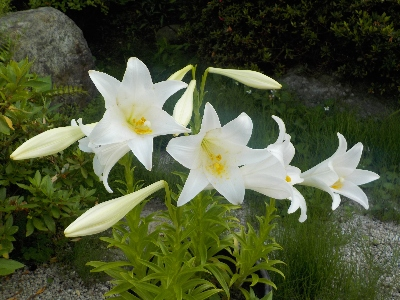
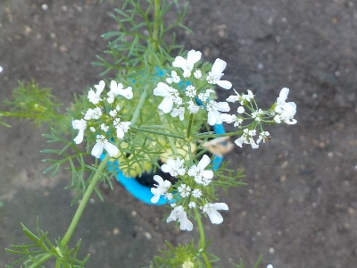

鉄砲ユリが咲きました。
2025/06/18

沢山花が付いたので、奇麗です。
育ててよかった。育てて良かったって思う花と、そうでもないなって思う花の違いってなんなんでしょうね？
好みの問題なんだろうな。
2025/06/18

沢山花が付いたので、奇麗です。
育ててよかった。育てて良かったって思う花と、そうでもないなって思う花の違いってなんなんでしょうね？
好みの問題なんだろうな。
2025/06/15

今年もパクチーの種蒔きをしましたが、発芽状況が悪かったです。
ちょっとだけを植えるのは面倒なので放置してたら花が咲きました。小さくて可愛い花ですね。
このまま育てたら来年用のタネが採れそうだけど、また発芽に失敗しそう。
過去の日記
梅雨の時期ですね。雑草が伸びる時期です。